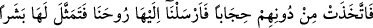
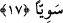

künyeler kullanırlardı. Câriyeleri zikredince ise onlar için künye kullanmaz, adlarını
anmaktan ve açıkça söylemekten çekinmezlerdi.
Hristiyanlar, Hz. Meryem ve oğlu Hz. İsa hakkında söylediklerini söyleyince Allah da
Meryem’in adını açıkça zikretti ve onun sıfatı olan kulluk, annelik gibi özelliklerini
pekiştirmek ve Meryem’i Arapların câriyeleri hakkında kullana geldikleri şekilde
kullanmak için bir künye ile zikretmedi. Bununla birlikte Hz. İsa’nın babası yoktur. Buna
böyle inanmak farzdır. İsa’nın zikri geçtiğinde annesine nisbet edilerek anılması, ona
baba isnâd etmemeye inanmanın farz olduğu ve Yahudilerin ileri geri konuşmalarından
(Allah onlara lanet etsin) o temiz Meryem’in uzak olduğu yönünde kalblerde bir his
belirir. İmam Süheylî’nin et-Ta‘rîf ve’l-i‘lâm’da böyle geçmektedir.
Es’iletü’l-hikem’de şöyle der: Meryem, Kur’an’da adı ile anılmıştır. Çünkü o, ibadet
ve tâatte olgun bir adam (erkek) gibi hareket etmiştir. Bundan dolayı da Hz. Musa, Hz.
İsa ve benzeri erkekler gibi kendi adıyla anılmıştır. Aynı şekilde peygamberlere Allah
tarafından nasıl hitap ediliyorsa ona da öyle hitap edilmiştir. Mesela “Ey Meryem!
Rabbine ibadet et; secdeye kapan, (O’nun huzurunda) eğilenlerle beraber sen de
eğil.” (Âl-i İmrân, 3/43) buyrulmuştur. Bu yüzden bâzı âlimler onun peygamber
olduğunu söylemişlerdir.
“Bir zaman o, âilesinden” kavminden “ayrılıp doğu yönünde bir yere çekilmişti.”
Hasan Basrî der ki: “Bundan dolayı Hristiyanlar doğuyu Yahudiler de batıyı kıble
edindiler. Çünkü Musa (a.s.)’ın Allah ile buluştuğu (mîkat) ve Tevrat’ın kendisine
verildiği yer dağın batı tarafında idi. Nitekim Kur’ân’da bu durum şöyle ifade
edilmiştir: “Musa’ya emrimizi vahyettiğimiz sırada, sen batı yönünde
bulunmuyordun.” (el-Kasas, 28/44) Buna göre âyetin mânâsı şöyledir: Meryem
kavminden ayrılınca ve tek başına kalıp onlardan uzaklaşınca, Zekeriya’nın hanımı olan
teyzesi İyşâ’nın evinin doğu tarafına gelmişti. Onun bulunduğu yer mesciddi. Âdet
gördüğü zaman teyzesinin evine; temizlenince de mescide dönerdi. Bir gün yıkanma
ihtiyacı duydu, mevsim kıştı. Evin sağ tarafına, güneşin karşısında bir yere geldi.
17. Onlarla kendi arasına bir perde çekmişti. Biz de ruhumuzu (Cebrâil’i) ona
gönderdik. (Cebrâil) ona düzgün bir insan şeklinde göründü.
“Onlarla kendi arasına bir perde çekmişti.” Yani âilesinin bulunduğu yerden daha
alçak bir yere, onlarla arasına kendisini örtecek bir perde çekmişti. Kâşifî
“görünmesine mâni olacak bir perde çekmişti” der. Yıkandığı yerde temizlendiği ve
elbisesini giydiği sırada yanına kıvırcık saçlı, parlak yüzlü, genç bir delikanlı geldi.
Âyette geçen; “Biz de ruhumuzu ona gönderdik.” cümlesi bunu göstermektedir. Yani,